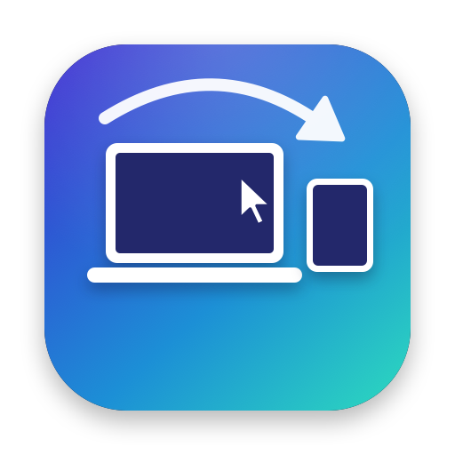
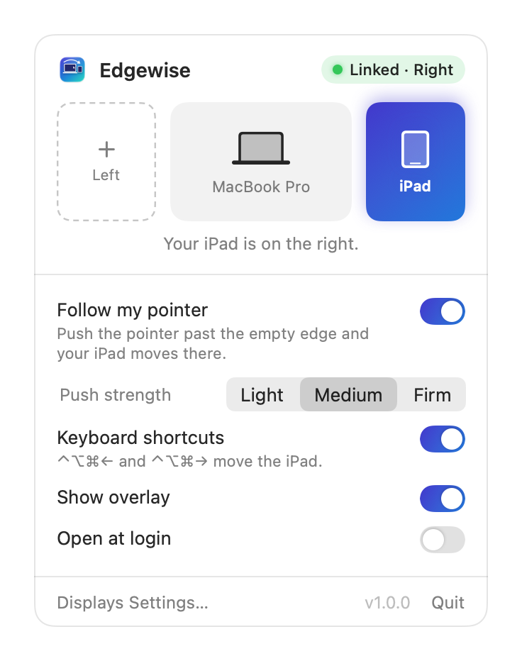
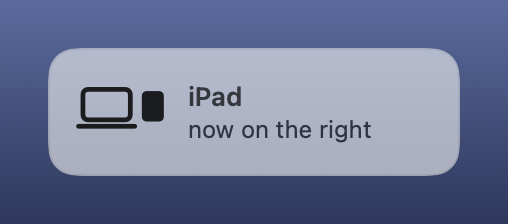

Your iPad, on whichever side you put it. Automatic left/right placement for Universal Control.

Universal Control remembers which side your iPad was on and never checks again. Put it on the other side of your MacBook and the pointer keeps leaving through the wrong edge. Edgewise notices where you're actually reaching and re-links the iPad there, in a fraction of a second.
Left of your MacBook today, right of it tomorrow. Nothing to change in System Settings.
Move the pointer past the edge where the iPad now sits, like you would to cross over.
Edgewise moves the link while you push, so the same motion lands on the iPad.
It lives in the menu bar, needs no permissions, and never touches the network.
Detects a deliberate push past the empty edge. Light, Medium or Firm, so hitting a scroll bar doesn't count.
⌃⌥⌘← and ⌃⌥⌘→ move the iPad left or right from anywhere.
edgewise://move/left, /right and edgewise://swap for Shortcuts, Raycast or Alfred.
The iPad attaches to the display you pushed against, or the outermost one on that side.
edgewisectl prints status as JSON, moves the iPad, and backs up or restores your arrangement.
No Accessibility, Input Monitoring or Screen Recording access. No analytics, no network.
A Mac can't sense where an iPad physically sits, so Edgewise reads intent: a long, continuous push against an outer screen edge means "my iPad is over here".
To move it, Edgewise's helper asks macOS's own Universal Control framework to rewrite the stored arrangement, so every hash is computed by Apple's code. The Universal Control agent picks the change up immediately and syncs it to your iPad. The details are in the README.

Download the latest release, unzip, and drag Edgewise to Applications. It isn't notarized yet, so right-click it and choose Open the first time. Or build it with just the Command Line Tools:
git clone https://github.com/emcar-alt/Edgewise.git
cd Edgewise
make install